Catalina Island 2008
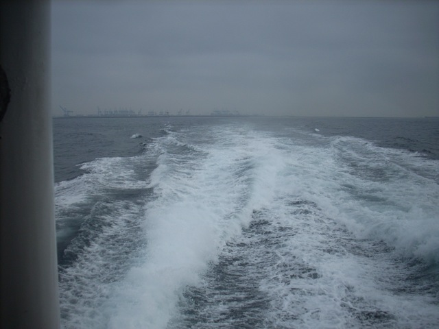
All right. Time to start something different. Non-Coaster Updates. This ones from a while ago back in 2008. Basically, we decided to have a fun day on Catalina Island and he we are, taking the boat.
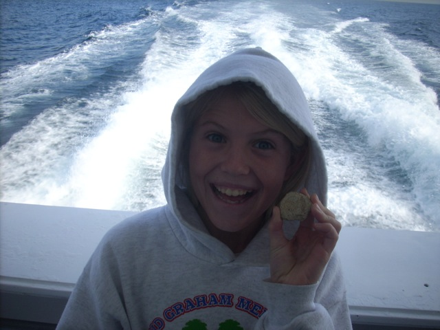
"This is my rock. His name is Kyle and I found him by the pool." =)
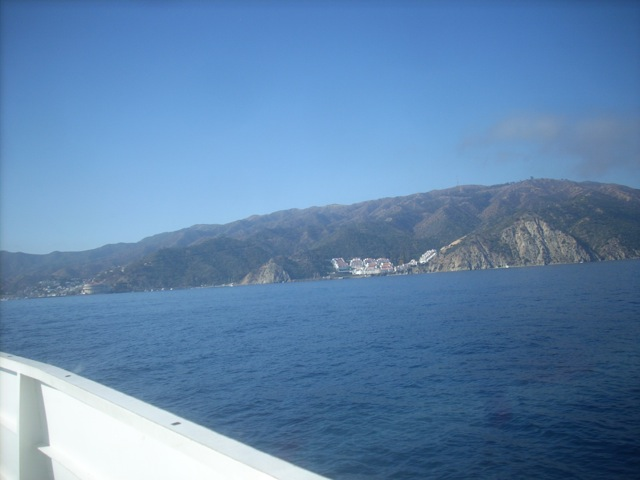
Whats that I see in the distance!!?
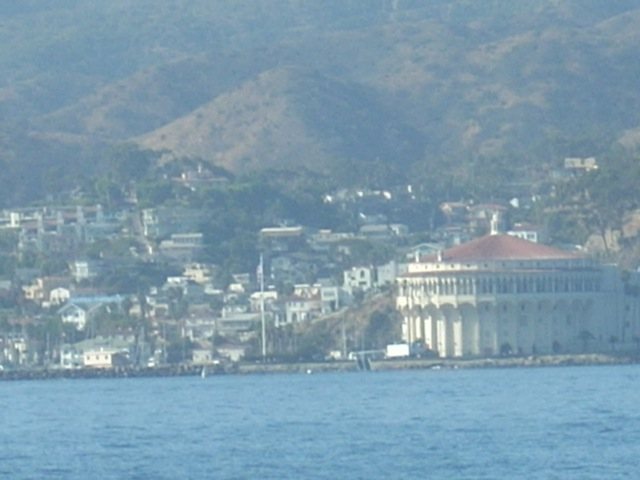
Yay!!! We made it!!!
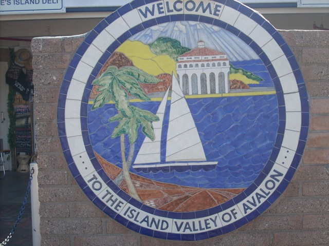
Yep. We're here on Avalon, the only city on any of the Channel Islands.
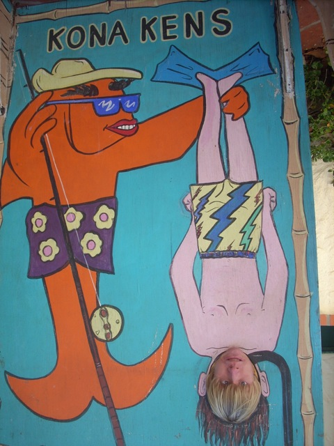
"Boy!!! How many times do I have to fish you out of the freaking water!!?"
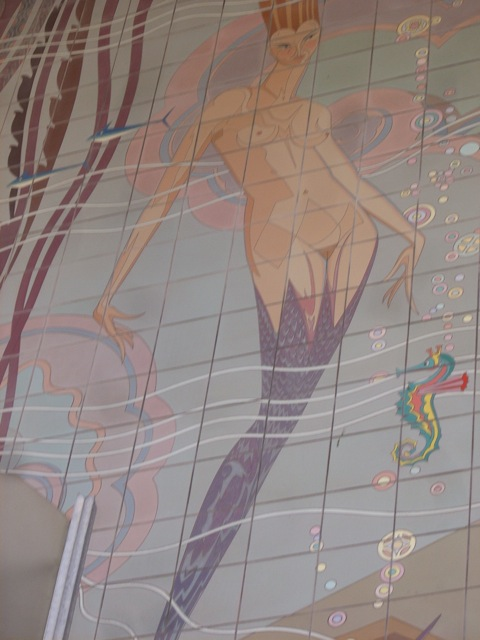
For some reason, a lot of people would freak out and bitch over a people like this. People are stupid.
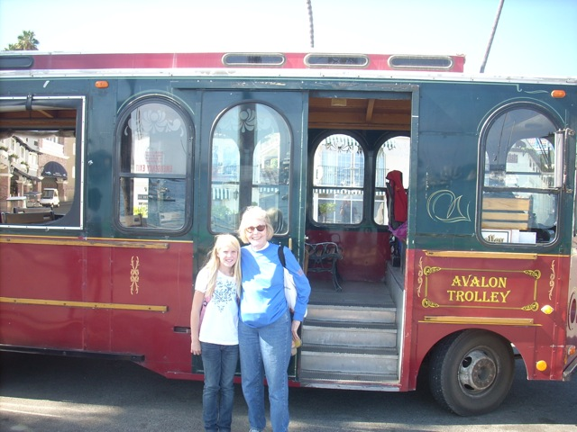
Hanging out by the Avalon Trolley.
 "This sugar lemonade needs more sugar!!!" >=(
"This sugar lemonade needs more sugar!!!" >=(
 Anyone else want some of Mamma Mia's Day Old Sphagetti?
Anyone else want some of Mamma Mia's Day Old Sphagetti?
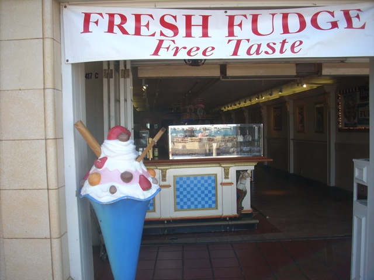
Hey! If its free, its got to be good.
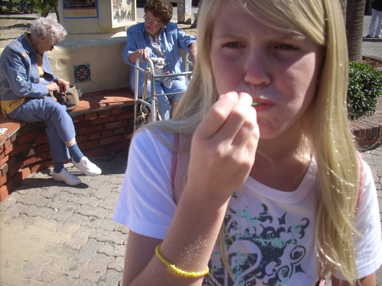
"BEST FREE FUDGE EVER!!!"
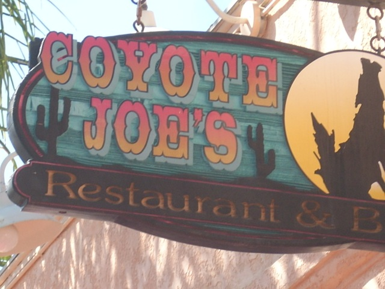
Flashback to our 2006 Trip to Catalina Island.
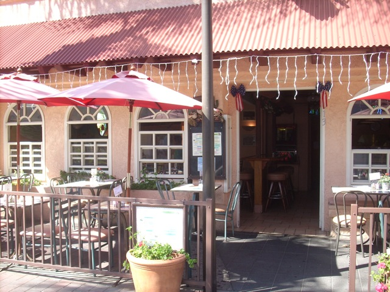
Basically, this is the story. We were running late, but we wanted a quick lunch. So we stopped at Coyote Joes. We got drinks, I drank a Coke. But before they came back to take our order, we saw the time and noticed that if we didn't leave NOW, we'd miss our tour, so we just booked it and left. Technically, we did get drinks, but yeah. Thats the end of that. Someday, I must go back and eat there for the meal that was never meant to be. =)
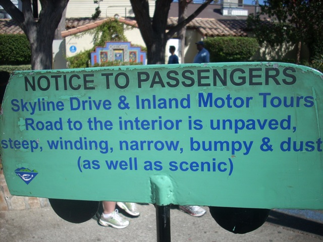
Sounds like my kind of road.
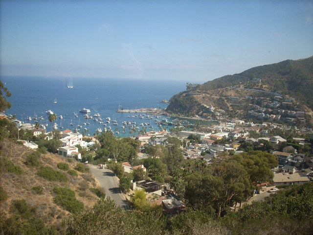
Bye Avalon!!! We'll be back in an hour after we check out the rest of Catalina Island.
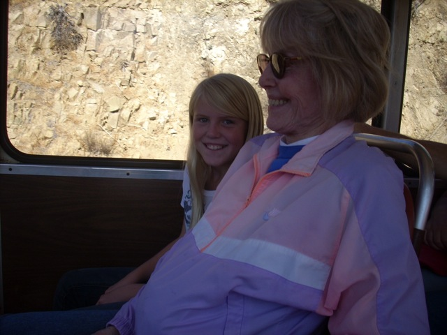
Just sitting back and enjoying the ride.
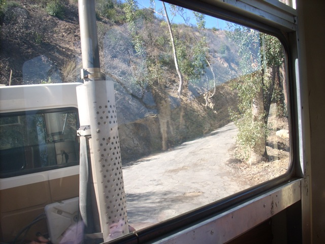
Aww. Its not that steep, bumpy, or windy. What a let down. =(
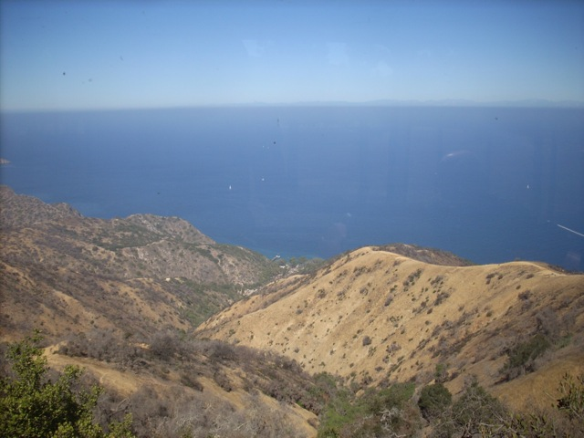
Flashback to the 5th Grade Camping Trip I had on Catalina Island. Man that was fun.
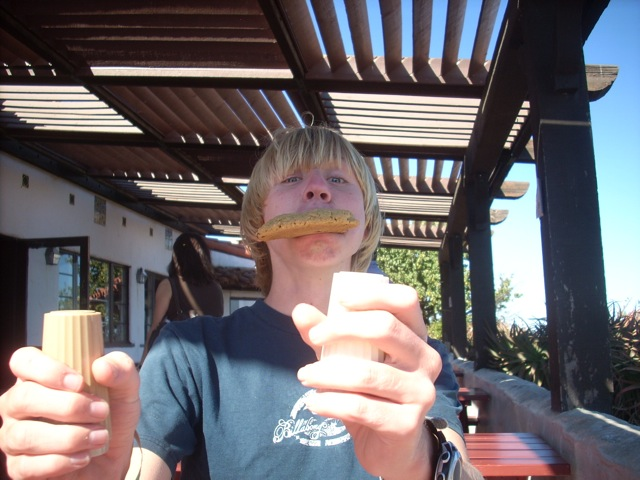
"What? Do I have something in my mouth?"
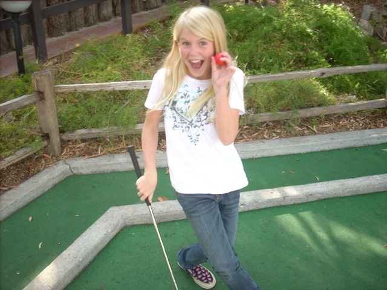
Back in Avalon, we decided to play some Mini-Golf.
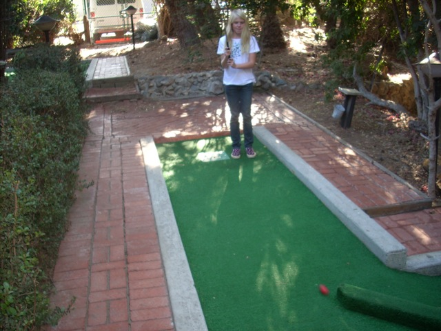
"I got a hole in 18!!!"
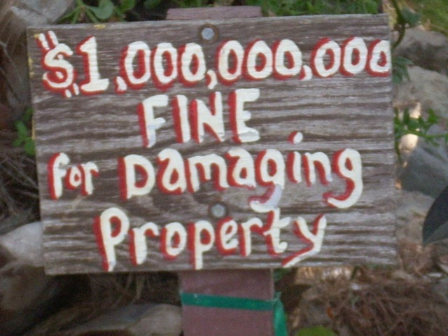
Uh oh. Do you offer payment plans?
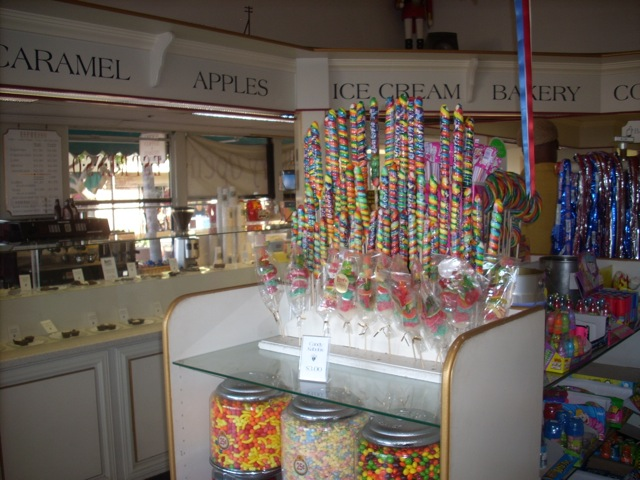
I'll take the entire shop please.
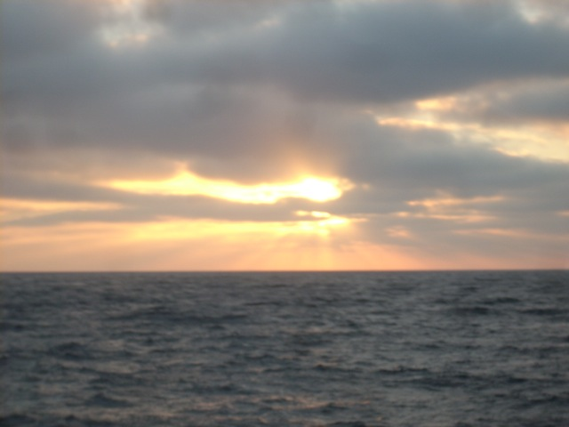
Sunset on the ocean.
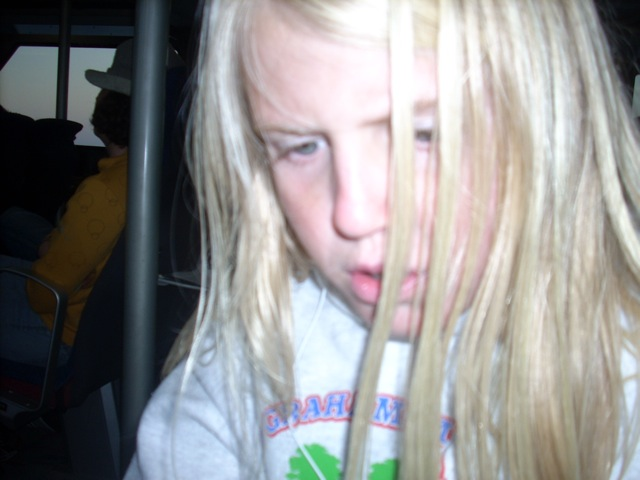
Yeah. I'd say that this day has been a big success.
Home